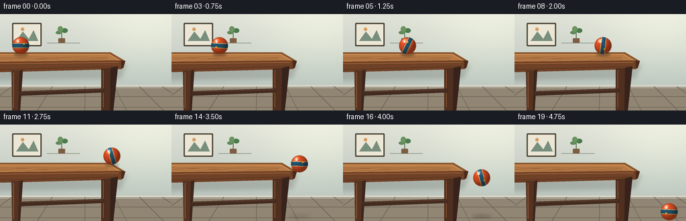
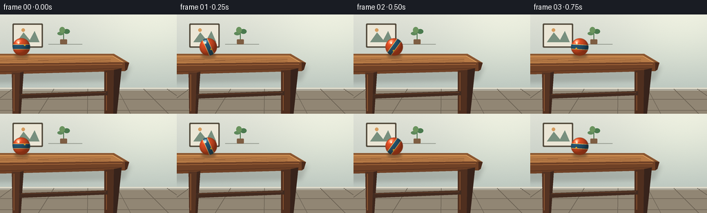

CODING AGENTS AS PIXEL WORLD MODELS
traex/GPT-5.6-Sol · instance_preservation_0019
点击播放 · 原生 RGB 像素
逐轮保存的候选
回放视频、检查图与代码变化。
每份候选均可单独播放。实际图片检查记录在下方工具轨迹中。
候选 01播放与检查图
点击播放 · 原生 RGB 像素


展开代码变化
--- 上一保存版本
+++ 本次保存版本
@@ -0,0 +1,204 @@
+from pathlib import Path
+import math
+import numpy as np
+from PIL import Image, ImageDraw, ImageFilter
+import artifact_io
+
+W, H, N = 256, 144, 20
+S = 4
+WW, HH = W*S, H*S
+rng = np.random.default_rng(19)
+
+def sc(v):
+ return int(round(v*S))
+
+def poly(draw, points, fill, **kw):
+ draw.polygon([(sc(x), sc(y)) for x,y in points], fill=fill, **kw)
+
+def line(draw, points, fill, width=1):
+ draw.line([(sc(x), sc(y)) for x,y in points], fill=fill, width=max(1,sc(width)))
+
+def ellipse(draw, box, fill, **kw):
+ draw.ellipse(tuple(sc(x) for x in box), fill=fill, **kw)
+
+def rounded(draw, box, radius, fill, outline=None, width=1):
+ draw.rounded_rectangle(tuple(sc(x) for x in box), radius=sc(radius), fill=fill,
+ outline=outline, width=sc(width))
+
+def make_background():
+ # softly lit wall and floor with slight photographic texture
+ y = np.arange(HH)[:,None]
+ x = np.arange(WW)[None,:]
+ wall_t = np.clip(y/(108*S),0,1)
+ wall = np.zeros((HH,WW,3),dtype=np.float32)
+ top = np.array([224,226,215],np.float32)
+ bottom = np.array([186,197,190],np.float32)
+ wall[:] = top + (bottom-top)*wall_t[...,None]
+ # broad daylight patch from upper right
+ glow = np.exp(-(((x-220*S)/(95*S))**2 + ((y-25*S)/(70*S))**2))
+ wall += glow[...,None]*np.array([16,16,11])
+ noise = rng.normal(0,0.9,(HH,WW,1))
+ wall += noise
+ wall = np.clip(wall,0,255).astype(np.uint8)
+ im = Image.fromarray(wall,'RGB').convert('RGBA')
+ d = ImageDraw.Draw(im,'RGBA')
+
+ # quiet wall art and shelf details, giving the scene scale
+ rounded(d,(18,13,62,48),1.5,(82,74,60,255),None)
+ rounded(d,(20,15,60,46),0.8,(235,230,214,255),None)
+ poly(d,[(24,40),(34,26),(43,37),(50,24),(57,40)],(120,143,126,255))
+ ellipse(d,(31,20,36,25),(214,155,93,255))
+ line(d,[(70,43),(119,43)],(146,151,140,170),1)
+ # small plant silhouette on shelf
+ rounded(d,(87,36,97,43),1,(126,94,67,255))
+ line(d,[(92,36),(92,25)],(77,116,78,255),1.2)
+ ellipse(d,(83,25,92,30),(94,137,91,255))
+ ellipse(d,(92,21,101,28),(74,122,78,255))
+ ellipse(d,(86,18,94,27),(107,148,94,255))
+
+ # baseboard and floor
+ poly(d,[(0,106),(256,106),(256,144),(0,144)],(145,134,116,255))
+ poly(d,[(0,106),(256,106),(256,110),(0,110)],(218,214,198,255))
+ line(d,[(0,109),(256,109)],(105,103,94,120),0.7)
+ # floor planks in perspective
+ for x0 in [-55,18,78,127,170,208,242,273,303]:
+ xb = 128 + (x0-128)*1.45
+ line(d,[(x0,108),(xb,144)],(103,94,80,65),0.65)
+ for yy in [123,139]:
+ line(d,[(0,yy),(256,yy)],(106,96,82,50),0.7)
+
+ # table's far cast shadow on wall/floor
+ shadow = Image.new('RGBA',(WW,HH),(0,0,0,0))
+ sd=ImageDraw.Draw(shadow,'RGBA')
+ poly(sd,[(-10,76),(190,75),(180,96),(-10,99)],(28,27,23,42))
+ shadow=shadow.filter(ImageFilter.GaussianBlur(sc(3)))
+ im=Image.alpha_composite(im,shadow)
+ d=ImageDraw.Draw(im,'RGBA')
+
+ # table: broad wooden top in strong readable side profile
+ poly(d,[(-15,57),(165,57),(187,70),(-12,74)],(139,88,50,255))
+ poly(d,[(-12,60),(164,60),(181,70),(-10,71)],(184,123,70,255))
+ # warm highlight on top edge
+ line(d,[(-8,60),(163,60),(180,70)],(229,167,99,210),0.8)
+ # front fascia and right thickness
+ poly(d,[(-10,71),(181,69),(181,82),(-10,87)],(111,65,38,255))
+ poly(d,[(181,69),(187,70),(184,80),(181,82)],(74,42,27,255))
+ line(d,[(-4,74),(177,72)],(209,135,75,150),0.7)
+ line(d,[(-2,83),(176,78)],(70,40,26,100),0.65)
+ # subtle wood grain
+ for off, alpha in [(0,80),(1.9,55),(4.0,42)]:
+ pts=[]
+ for xx in range(-5,174,15):
+ yy=64+off+0.5*math.sin(xx*.095+off)
+ pts.append((xx,yy))
+ line(d,pts,(103,60,35,alpha),0.45)
+ # sturdy tapered legs and their highlights
+ poly(d,[(17,84),(32,84),(28,144),(18,144)],(85,51,34,255))
+ poly(d,[(29,84),(34,83),(30,144),(27,144)],(61,38,28,255))
+ line(d,[(20,87),(20,140)],(151,93,53,130),1)
+ poly(d,[(151,81),(170,80),(165,144),(151,144)],(79,47,31,255))
+ poly(d,[(165,80),(176,78),(169,144),(164,144)],(55,35,27,255))
+ line(d,[(154,84),(154,139)],(145,87,50,125),1)
+ # crossbar faintly visible
+ poly(d,[(28,115),(156,111),(156,117),(28,122)],(66,43,32,245))
+ line(d,[(31,116),(153,113)],(128,78,47,100),0.8)
+ return im
+
+BACKGROUND = make_background()
+
+def position(i):
+ # Twelve-frame roll, then horizontal inertia plus accelerating fall.
+ if i <= 11:
+ # slight ease-in makes the action natural, while maintaining obvious travel
+ u=i/11
+ x=31 + 136*(0.12*u + 0.88*u**0.92)
+ y=47.0 + 0.25*math.sin(u*math.pi)
+ support=True
+ else:
+ t=i-11
+ x=167 + 8.0*t
+ y=47 + 1.30*t*t
+ support=False
+ return x,y,support
+
+def draw_soft_ellipse(base, box, color, blur):
+ layer=Image.new('RGBA',(WW,HH),(0,0,0,0))
+ ld=ImageDraw.Draw(layer,'RGBA')
+ ellipse(ld,box,color)
+ return Image.alpha_composite(base,layer.filter(ImageFilter.GaussianBlur(sc(blur))))
+
+def render_ball(base,cx,cy,angle):
+ # Rasterized sphere: persistent orange/blue/cream identity, texture rotates clockwise.
+ r=12.7
+ pad=2
+ x0=max(0,sc(cx-r-pad)); x1=min(WW,sc(cx+r+pad)+1)
+ y0=max(0,sc(cy-r-pad)); y1=min(HH,sc(cy+r+pad)+1)
+ if x1<=x0 or y1<=y0: return base
+ xs=(np.arange(x0,x1)+0.5)/S-cx
+ ys=(np.arange(y0,y1)+0.5)/S-cy
+ X,Y=np.meshgrid(xs,ys)
+ rr=np.sqrt(X*X+Y*Y)
+ aa=np.clip((r+0.45-rr)/0.9,0,1) # antialiased edge
+ nx=X/r; ny=Y/r
+ nz=np.sqrt(np.maximum(0,1-nx*nx-ny*ny))
+ ca,sa=math.cos(angle),math.sin(angle)
+ # rotating local image coordinates
+ u=ca*nx-sa*ny
+ v=sa*nx+ca*ny
+ col=np.zeros((*X.shape,3),dtype=float)
+ col[:]=np.array([224,79,36])
+ # broad navy band and thin cream piping both rotate with the ball
+ stripe=np.abs(v) < 0.235
+ piping=(np.abs(v)>=0.235)&(np.abs(v)<0.305)
+ col[stripe]=np.array([37,87,116])
+ col[piping]=np.array([239,200,119])
+ # identifying round yellow badge rides on the surface
+ badge=((u-0.38)**2+(v+0.20)**2 < 0.105**2) & (nz>0.18)
+ col[badge]=np.array([247,190,48])
+ # Lambertian upper-left light, ambient, rim darkening and specular glint
+ lx,ly,lz=-0.48,-0.62,0.62
+ diffuse=np.clip(nx*lx+ny*ly+nz*lz,0,1)
+ shade=0.58+0.48*diffuse
+ rim=np.clip(nz,0,1)**0.38
+ shade*=0.72+0.28*rim
+ col*=shade[...,None]
+ spec=np.clip(nx*(-0.38)+ny*(-0.62)+nz*0.69,0,1)**32
+ col += spec[...,None]*120
+ # lower-right reflected warm floor light
+ col += np.clip(ny,0,1)[...,None]*np.array([11,6,1])
+ alpha=(aa*255).astype(np.uint8)
+ rgba=np.dstack([np.clip(col,0,255).astype(np.uint8),alpha])
+ patch=Image.fromarray(rgba,'RGBA')
+ base.alpha_composite(patch,(x0,y0))
+ # sharp tiny catchlight, stable light source (not painted texture)
+ d=ImageDraw.Draw(base,'RGBA')
+ ellipse(d,(cx-5.7,cy-7.2,cx-3.1,cy-4.7),(255,245,219,175))
+ return base
+
+def make_frame(i):
+ cx,cy,supported=position(i)
+ im=BACKGROUND.copy()
+ if supported:
+ # contact shadow elongates subtly as ball approaches the edge
+ edge=max(0,(cx-145)/22)
+ im=draw_soft_ellipse(im,(cx-10.5,58.1,cx+11.0,62.8),(34,24,17,int(95-30*edge)),1.5)
+ else:
+ # receding table-edge shadow during the first airborne beats
+ t=i-11
+ if t<=3:
+ im=draw_soft_ellipse(im,(170+2*t,67,184+3*t,71.5),(28,20,16,int(48-11*t)),2.0)
+ # soft floor shadow tightens and darkens as the ball descends
+ floor_y=136
+ closeness=np.clip((cy-50)/80,0,1)
+ sw=17-7*closeness
+ im=draw_soft_ellipse(im,(cx-sw,floor_y-2,cx+sw,floor_y+3),(30,26,22,int(18+78*closeness)),2.5-1.3*closeness)
+ # texture angle from distance rolled; continuing spin in flight
+ angle=-(cx-31)/12.7
+ im=render_ball(im,cx,cy,angle)
+ # downsample gives clean antialiasing
+ im=im.convert('RGB').resize((W,H),Image.Resampling.LANCZOS)
+ return np.asarray(im,dtype=np.uint8)
+
+frames=np.stack([make_frame(i) for i in range(N)])
+artifact_io.save(frames,Path(__file__).resolve().parent)
+print('saved',frames.shape,frames.dtype)
可观测工具轨迹
实际执行的命令与返回图片。
命令 1exit 0
/bin/bash -lc "cat prompt.txt && printf '\\n---RULES---\\n' && cat GENERATION_RULES.md && printf '\\n---SPEC---\\n' && cat task_spec.json"
命令 2exit 0
/bin/bash -lc "find . -maxdepth 2 -type f -printf '%p\\n' | sort | head -200"
命令 3exit 0
/bin/bash -lc 'cat artifact_io.py'
命令 4exit 0
/bin/bash -lc "cat > generate.py <<'PY'
from pathlib import Path
import math
import numpy as np
from PIL import Image, ImageDraw, ImageFilter
import artifact_io
W, H, N = 256, 144, 20
S = 4
WW, HH = W*S, H*S
rng = np.random.default_rng(19)
def sc(v):
return int(round(v*S))
def poly(draw, points, fill, **kw):
draw.polygon([(sc(x), sc(y)) for x,y in points], fill=fill, **kw)
def line(draw, points, fill, width=1):
draw.line([(sc(x), sc(y)) for x,y in points], fill=fill, width=max(1,sc(width)))
def ellipse(draw, box, fill, **kw):
draw.ellipse(tuple(sc(x) for x in box), fill=fill, **kw)
def rounded(draw, box, radius, fill, outline=None, width=1):
draw.rounded_rectangle(tuple(sc(x) for x in box), radius=sc(radius), fill=fill,
outline=outline, width=sc(width))
def make_background():
# softly lit wall and floor with slight photographic texture
y = np.arange(HH)[:,None]
x = np.arange(WW)[None,:]
wall_t = np.clip(y/(108*S),0,1)
wall = np.zeros((HH,WW,3),dtype=np.float32)
top = np.array([224,226,215],np.float32)
bottom = np.array([186,197,190],np.float32)
wall[:] = top + (bottom-top)*wall_t[...,None]
# broad daylight patch from upper right
glow = np.exp(-(((x-220*S)/(95*S))**2 + ((y-25*S)/(70*S))**2))
wall += glow[...,None]*np.array([16,16,11])
noise = rng.normal(0,0.9,(HH,WW,1))
wall += noise
wall = np.clip(wall,0,255).astype(np.uint8)
im = Image.fromarray(wall,'RGB').convert('RGBA')
d = ImageDraw.Draw(im,'RGBA')
# quiet wall art and shelf details, giving the scene scale
rounded(d,(18,13,62,48),1.5,(82,74,60,255),None)
rounded(d,(20,15,60,46),0.8,(235,230,214,255),None)
poly(d,[(24,40),(34,26),(43,37),(50,24),(57,40)],(120,143,126,255))
ellipse(d,(31,20,36,25),(214,155,93,255))
line(d,[(70,43),(119,43)],(146,151,140,170),1)
# small plant silhouette on shelf
rounded(d,(87,36,97,43),1,(126,94,67,255))
line(d,[(92,36),(92,25)],(77,116,78,255),1.2)
ellipse(d,(83,25,92,30),(94,137,91,255))
ellipse(d,(92,21,101,28),(74,122,78,255))
ellipse(d,(86,18,94,27),(107,148,94,255))
# baseboard and floor
poly(d,[(0,106),(256,106),(256,144),(0,144)],(145,134,116,255))
poly(d,[(0,106),(256,106),(256,110),(0,110)],(218,214,198,255))
line(d,[(0,109),(256,109)],(105,103,94,120),0.7)
# floor planks in perspective
for x0 in [-55,18,78,127,170,208,242,273,303]:
xb = 128 + (x0-128)*1.45
line(d,[(x0,108),(xb,144)],(103,94,80,65),0.65)
for yy in [123,139]:
line(d,[(0,yy),(256,yy)],(106,96,82,50),0.7)
# table's far cast shadow on wall/floor
shadow = Image.new('RGBA',(WW,HH),(0,0,0,0))
sd=ImageDraw.Draw(shadow,'RGBA')
poly(sd,[(-10,76),(190,75),(180,96),(-10,99)],(28,27,23,42))
shadow=shadow.filter(ImageFilter.GaussianBlur(sc(3)))
im=Image.alpha_composite(im,shadow)
d=ImageDraw.Draw(im,'RGBA')
# table: broad wooden top in strong readable side profile
poly(d,[(-15,57),(165,57),(187,70),(-12,74)],(139,88,50,255))
poly(d,[(-12,60),(164,60),(181,70),(-10,71)],(184,123,70,255))
# warm highlight on top edge
line(d,[(-8,60),(163,60),(180,70)],(229,167,99,210),0.8)
# front fascia and right thickness
poly(d,[(-10,71),(181,69),(181,82),(-10,87)],(111,65,38,255))
poly(d,[(181,69),(187,70),(184,80),(181,82)],(74,42,27,255))
line(d,[(-4,74),(177,72)],(209,135,75,150),0.7)
line(d,[(-2,83),(176,78)],(70,40,26,100),0.65)
# subtle wood grain
for off, alpha in [(0,80),(1.9,55),(4.0,42)]:
pts=[]
for xx in range(-5,174,15):
yy=64+off+0.5*math.sin(xx*.095+off)
pts.append((xx,yy))
line(d,pts,(103,60,35,alpha),0.45)
# sturdy tapered legs and their highlights
poly(d,[(17,84),(32,84),(28,144),(18,144)],(85,51,34,255))
poly(d,[(29,84),(34,83),(30,144),(27,144)],(61,38,28,255))
line(d,[(20,87),(20,140)],(151,93,53,130),1)
poly(d,[(151,81),(170,80),(165,144),(151,144)],(79,47,31,255))
poly(d,[(165,80),(176,78),(169,144),(164,144)],(55,35,27,255))
line(d,[(154,84),(154,139)],(145,87,50,125),1)
# crossbar faintly visible
poly(d,[(28,115),(156,111),(156,117),(28,122)],(66,43,32,245))
line(d,[(31,116),(153,113)],(128,78,47,100),0.8)
return im
BACKGROUND = make_background()
def position(i):
# Twelve-frame roll, then horizontal inertia plus accelerating fall.
if i <= 11:
# slight ease-in makes the action natural, while maintaining obvious travel
u=i/11
x=31 + 136*(0.12*u + 0.88*u**0.92)
y=47.0 + 0.25*math.sin(u*math.pi)
support=True
else:
t=i-11
x=167 + 8.0*t
y=47 + 1.30*t*t
support=False
return x,y,support
def draw_soft_ellipse(base, box, color, blur):
layer=Image.new('RGBA',(WW,HH),(0,0,0,0))
ld=ImageDraw.Draw(layer,'RGBA')
ellipse(ld,box,color)
return Image.alpha_composite(base,layer.filter(ImageFilter.GaussianBlur(sc(blur))))
def render_ball(base,cx,cy,angle):
# Rasterized sphere: persistent orange/blue/cream identity, texture rotates clockwise.
r=12.7
pad=2
x0=max(0,sc(cx-r-pad)); x1=min(WW,sc(cx+r+pad)+1)
y0=max(0,sc(cy-r-pad)); y1=min(HH,sc(cy+r+pad)+1)
if x1<=x0 or y1<=y0: return base
xs=(np.arange(x0,x1)+0.5)/S-cx
ys=(np.arange(y0,y1)+0.5)/S-cy
X,Y=np.meshgrid(xs,ys)
rr=np.sqrt(X*X+Y*Y)
aa=np.clip((r+0.45-rr)/0.9,0,1) # antialiased edge
nx=X/r; ny=Y/r
nz=np.sqrt(np.maximum(0,1-nx*nx-ny*ny))
ca,sa=math.cos(angle),math.sin(angle)
# rotating local image coordinates
u=ca*nx-sa*ny
v=sa*nx+ca*ny
col=np.zeros((*X.shape,3),dtype=float)
col[:]=np.array([224,79,36])
# broad navy band and thin cream piping both rotate with the ball
stripe=np.abs(v) < 0.235
piping=(np.abs(v)>=0.235)&(np.abs(v)<0.305)
col[stripe]=np.array([37,87,116])
col[piping]=np.array([239,200,119])
# identifying round yellow badge rides on the surface
badge=((u-0.38)**2+(v+0.20)**2 < 0.105**2) & (nz>0.18)
col[badge]=np.array([247,190,48])
# Lambertian upper-left light, ambient, rim darkening and specular glint
lx,ly,lz=-0.48,-0.62,0.62
diffuse=np.clip(nx*lx+ny*ly+nz*lz,0,1)
shade=0.58+0.48*diffuse
rim=np.clip(nz,0,1)**0.38
shade*=0.72+0.28*rim
col*=shade[...,None]
spec=np.clip(nx*(-0.38)+ny*(-0.62)+nz*0.69,0,1)**32
col += spec[...,None]*120
# lower-right reflected warm floor light
col += np.clip(ny,0,1)[...,None]*np.array([11,6,1])
alpha=(aa*255).astype(np.uint8)
rgba=np.dstack([np.clip(col,0,255).astype(np.uint8),alpha])
patch=Image.fromarray(rgba,'RGBA')
base.alpha_composite(patch,(x0,y0))
# sharp tiny catchlight, stable light source (not painted texture)
d=ImageDraw.Draw(base,'RGBA')
ellipse(d,(cx-5.7,cy-7.2,cx-3.1,cy-4.7),(255,245,219,175))
return base
def make_frame(i):
cx,cy,supported=position(i)
im=BACKGROUND.copy()
if supported:
# contact shadow elongates subtly as ball approaches the edge
edge=max(0,(cx-145)/22)
im=draw_soft_ellipse(im,(cx-10.5,58.1,cx+11.0,62.8),(34,24,17,int(95-30*edge)),1.5)
else:
# receding table-edge shadow during the first airborne beats
t=i-11
if t<=3:
im=draw_soft_ellipse(im,(170+2*t,67,184+3*t,71.5),(28,20,16,int(48-11*t)),2.0)
# soft floor shadow tightens and darkens as the ball descends
floor_y=136
closeness=np.clip((cy-50)/80,0,1)
sw=17-7*closeness
im=draw_soft_ellipse(im,(cx-sw,floor_y-2,cx+sw,floor_y+3),(30,26,22,int(18+78*closeness)),2.5-1.3*closeness)
# texture angle from distance rolled; continuing spin in flight
angle=-(cx-31)/12.7
im=render_ball(im,cx,cy,angle)
# downsample gives clean antialiasing
im=im.convert('RGB').resize((W,H),Image.Resampling.LANCZOS)
return np.asarray(im,dtype=np.uint8)
frames=np.stack([make_frame(i) for i in range(N)])
artifact_io.save(frames,Path(__file__).resolve().parent)
print('saved',frames.shape,frames.dtype)
PY
python generate.py"命令 5exit 0
/bin/bash -lc "python - <<'PY'
from pathlib import Path
import numpy as np
p=Path('.')
a=np.load('pixels.npz')['pixels']
print('pixels',a.shape,a.dtype,'frames',len(list((p/'frames').glob('*.png'))))
print('artifacts',[(x.name,x.stat().st_size) for x in [p/'pixels.npz',p/'index.html',p/'inspection.png',p/'transition_check.png']])
PY"视觉工具实际返回图片 1

视觉工具实际返回图片 2

保存候选 1 份；完成命令 5 次；可验证图片返回 2 张。原始 API 响应与完整日志保留在本地。